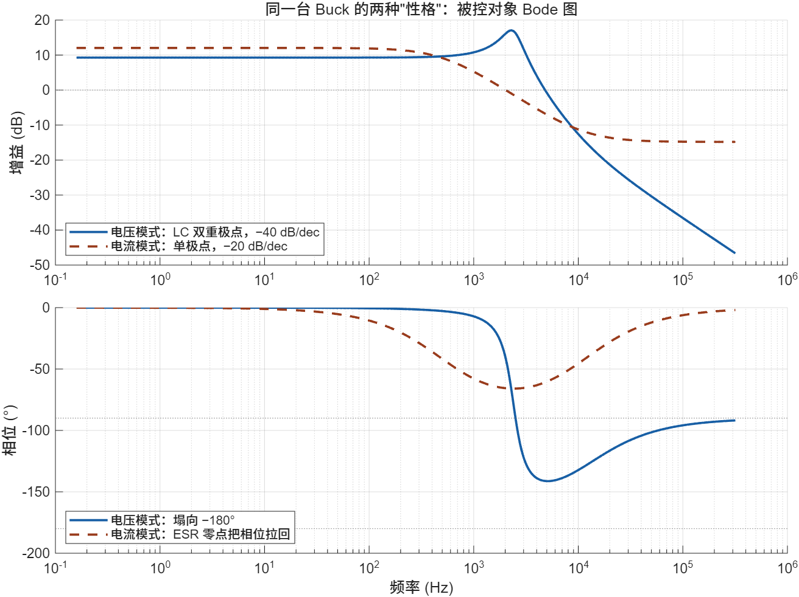
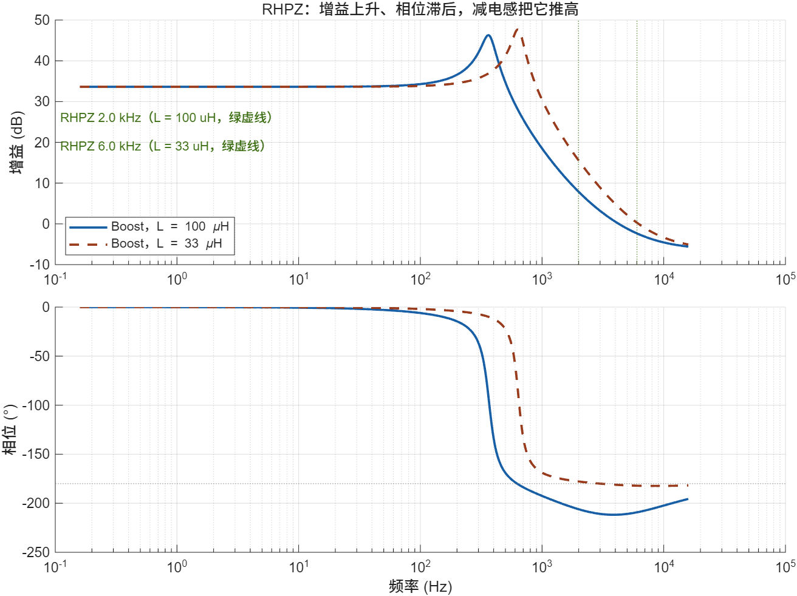
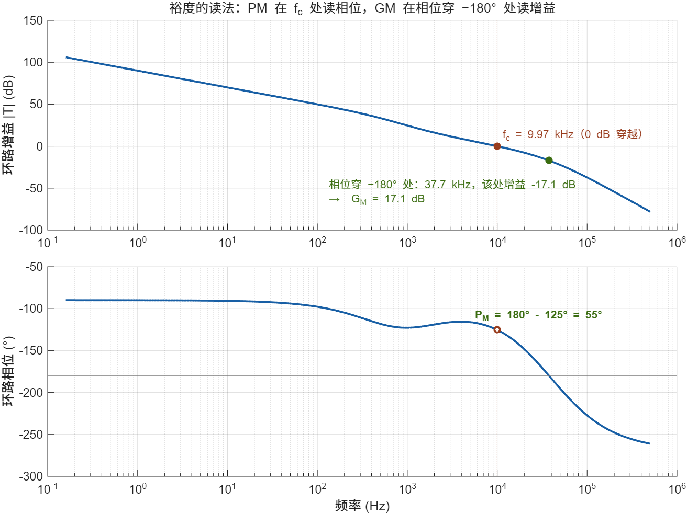
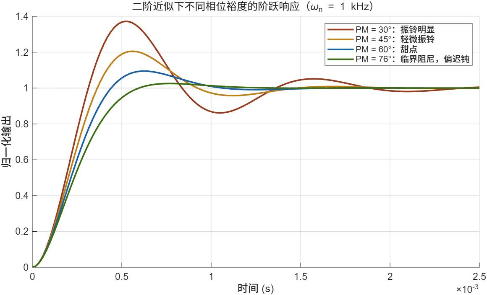
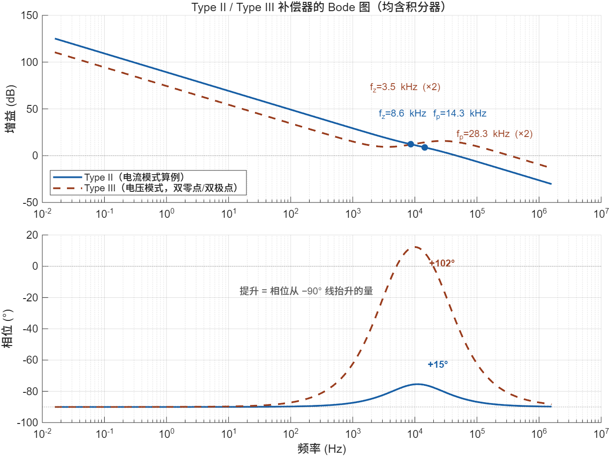
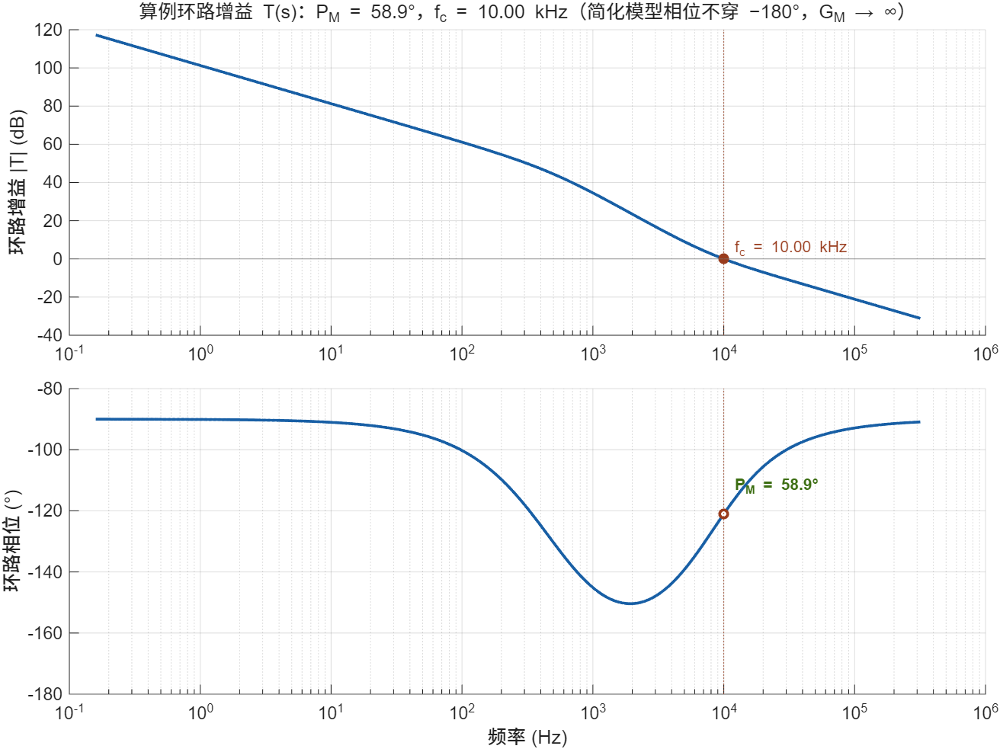
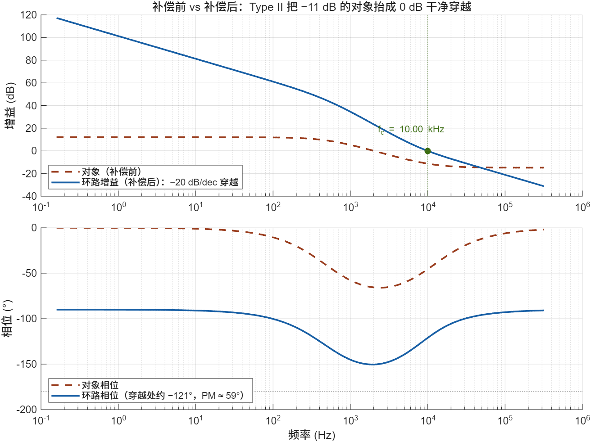

环路补偿设计：Type II / III · Bode · 裕度
被控对象 → 稳定裕度 → 补偿器拓扑 → k 因子 → 完整算例 → 隔离反馈 → 实测验证
补偿设计是电源工程师的分水岭技能。拓扑选型抄参考设计就能过，磁性元件算错顶多是热，唯独环路——补偿没做好，电源要么烧要么啸叫要么带不动载，而且故障现象往往和原因隔了三层。它是"入门靠拓扑，吃饭靠环路"里那顿饭本身。
好消息是：补偿设计有一套高度程式化的流程。先拿到被控对象的传函，再定穿越频率和裕度目标，然后用 k 因子把缺口换算成极零点位置，最后配平增益落到元件值。整条链每一环都有公式，不需要天赋，只需要把每个量的物理含义想清楚。这份文档就沿这条链展开，第 6 章用一个完整的 12 V → 3.3 V 电流模式 Buck 算例从头走到尾。
00导读：环路补偿在补偿什么
这件事的因果链
开关电源本身是个"有能力但没脑子"的东西：功率级能在微秒内搬动几十安培的电流，但它不知道输出该是多少。闭环控制给它装上脑子——采样输出、和基准比、用误差去调占空比。问题是这个"脑子"反应太快会自激（误差信号绕环一圈回来变成了助长自己的信号），反应太慢又撑不住负载跳变。补偿器设计，本质是在"不自激"和"够快"之间做一笔精确到分贝和度数的交易。
本文的主线与章节地图
补偿设计的信息流是单向的：对象的极零点决定一切。所以章节顺序就是设计顺序——
三种读法
01环路增益：用开环判闭环
1.1 闭环系统为什么要看开环
闭环系统的稳定性分析有一个经典困难：闭环传函的极点藏在分母里，一个三阶以上系统的特征方程手算就很痛苦，而且你看不到"该往哪改"——闭环极点是一大团耦合的结果，动任何一个元件都会同时挪动所有极点。开环增益 T(s) 的价值在于把问题拆开了：T(s) 是四个环节的简单乘积，每一项都独立可测、可算、可改；而闭环的稳定性完全由 T(s) 决定，这就是奈奎斯特判据的核心：
工程上的稳定性就是"离这个危险点有多远"——幅值上留的距离叫增益裕度，相位上留的距离叫相位裕度。第 3 章细讲。这里只要建立一个直觉：在 |T| = 1（0 dB）的那个频率上，误差信号绕环一圈回来，幅度不变；如果此时相位刚好反相，误差就会自我维持——振荡就是这么来的。
1.2 环路增益的四要素与断点
把 T(s) 拆开写，每一项都有明确的物理来源和"陷阱属性"：
| 环节 | 表达式 / 典型值 | 新手最容易犯的错 |
|---|---|---|
| 补偿器 Gc(s) | Type I / II / III（第 4 章） | 只有这一项是"你来设计"的，其余三项是"给定条件" |
| 调制器 Fm | 电压模式 = 1/Vramp；电流模式折算进 Ri | 漏乘。锯齿峰峰 1 V 时 Fm = 1，很多人因此侥幸没出错，换 2 V 锯齿就翻车 |
| 功率级 Gvd(s) | 含 LC 极点、ESR 零点、可能含 RHPZ | 用了简化模型但没检查适用边界（CCM / DCM） |
| 分压 H | Vref/Vout（如 0.8 V / 3.3 V = 0.242） | 漏乘。少乘 0.242 会高估裕度对应的增益 12 dB |
断点在哪一侧？理论断点可以开在环路任何一处，但实测注入必须开在高阻抗节点对低阻抗节点的过渡处——标准位置是分压电阻上端（输出节点是低阻抗，分压网络是高阻抗）。开错位置，注入信号会被源阻抗分掉，测出来的曲线整个是错的。
1.3 Bode 图：设计语言
Bode 图把 T(jω) 画成两张图：幅频（dB 对 log 频率）和相频（度对 log 频率）。它对补偿设计如此重要，是因为有三条"看图秒判"的规则：
- 斜率对应相位（渐近直觉，不是定律）：对极零点彼此充分分离的最小相位系统，−20 dB/dec 的区段相位趋于 −90°，−40 dB/dec 趋于 −180°；据此，穿越段若是 −20 dB/dec，PM 渐近上限 90°，若是 −40 dB/dec，上限 0°——看到 −40 dB/dec 穿越，基本可以判定 PM 不够，直接回去改补偿器。但这条规则只对"分离良好的一阶极零点"成立：RHPZ（幅频 +20 dB/dec、相位却 −90°）、传输延时、相邻零极点、谐振与高频寄生都会让它失效（2.3 节就是现成的反例）。所以可以把"穿越附近整体幅频大致呈 −20 dB/dec"当作好的工程目标，但 PM 最终必须从完整复频响应算出，不能只凭局部斜率断言。
- 每个极点拐一次弯：幅频在极点频率之后多弯 −20 dB/dec，相位在极点前后一个十倍频内滑落 −90°。零点相反。
- 裕度直接可读：幅频穿过 0 dB 处与相频曲线的差值就是 PM；相位穿 −180° 处与 0 dB 线的距离就是 GM（下一章的图）。
02被控对象：功率级说了算
2.1 电压模式 Buck：双重极点 + ESR 零点
电压模式下，占空比到输出的传函（含输出电容 ESR）：
本文算例用的是简化式：rC/R = 15 mΩ / 0.33 Ω = 4.55%，双重极点频率因此偏高 2.2%（2.39 kHz vs 精确 2.34 kHz），10 kHz 处幅值差 0.41 dB——数值上无害，但你要知道那一项去哪了；换成低阻负载（大电流输出）或高 ESR 电容时，它就不再可忽略。
三个特征频率，请背下来：
双重极点是电压模式的麻烦所在：它一次性贡献 −180° 相位，补偿器必须在穿越频率处把相位拉回来，这就是电压模式 Buck 通常需要 Type III 的原因（第 4.4 节）。ESR 零点是免费的相位礼物，但它的位置随电解液温度、电容老化漂移——可以把设计"落"在它附近，不能把裕度"押"在它身上。
2.2 电流模式 Buck：外电压环的低频单极点近似
峰值电流模式把电感电流纳入内环：占空比不再直接控制输出，而是控制电流峰值，电感这个"惯性"被内环吃掉了。在远低于 fsw/2 的频段，外环（电压环）看到的对象从二阶降为一阶：
一个低频极点（1/(2πRloadC)）加一个 ESR 零点，相位最深到 −90°。补偿器只需提供积分器加少量提升——Type II 就够，这就是电流模式"好补"的原因。
这个单极点模型的适用边界必须说清楚。它是外电压环的低频近似，成立前提有三条：① 频率远低于 fsw/2；② 电流内环足够快，可以当理想受控源；③ 忽略峰值采样效应与斜率补偿对低频增益的修正。完整的峰值电流模式小信号模型里，fsw/2 附近还存在一对由采样效应产生的复极点（subharmonic doublet），低频增益也随斜率补偿量变化。所以当 fc 取得较高（比如接近 fsw/10）、或占空比接近 0.5 时，必须换用 Ridley 模型或控制器厂商给出的精确 modulator model（见参考资料）。另外占空比 > 0.5 时有次谐波振荡，须加斜率补偿。

figs/gen_figs.m · 参数与第 6 章算例一致
2.3 RHPZ：Boost / 反激的带宽天花板
Boost、Buck-Boost、反激（CCM）的传函里有一个右半平面零点（RHPZ）。它的幅频特性和普通零点一样（+20 dB/dec，增益上升），相位却和极点一样（−90° 滞后）。增益说"相信我"，相位说"但请等我"——这种"先涨后塌"无法用任何常规补偿器抵消：你放一个极点去压它的增益，同时也压掉了自己的相位储备。
唯一正确的处理方式是躲：
注意一个反直觉的推论：减小电感会推高 frhpz，反而是提高 Boost 带宽的正路——虽然纹波会变大。想在 RHPZ 之上硬拉带宽的人，最后都会在示波器上看到周期 1/fc 左右的振荡。
别把 RHPZ 公式当成"Boost 类通用式"。不同拓扑的小信号模型不同，RHPZ 的位置也不同，直接套用会算错一倍以上：
- 理想 CCM Boost（R = Rload）：ωrhpz = R(1−D)²/L，即 frhpz = R(1−D)²/(2πL)。本例 R = 5 Ω、D = 0.5、L = 100 μH → 1.99 kHz，与图 2-2 一致。（TI SLVA633 式(5) 给的就是这个形式。）
- CCM Buck-Boost / 反激：电感只在 (1−D) 时段向输出供能，小信号模型里多一个 D 因子——ωrhpz = R(1−D)²/(DL)。同样参数下是 3.98 kHz，正好是 Boost 的两倍。两个式子不能混用；反激还涉及原边 / 副边折算，务必按对应拓扑的模型重新推导。
上面两个数值是用状态空间平均模型做数值线性化、再求 Gvd 分子零点得到的，与 TI SLVA633 的解析式逐位吻合。

figs/gen_figs.m（Boost CCM 平均模型，含 ESR 零点）
2.4 反馈分压 H 与调制器 Fm：最容易被漏的两项
分压网络把 3.3 V 缩到 0.8 V 基准口径，系数 0.242（−12.3 dB）——这一项不进环路增益，你算出的穿越频率会差一倍以上。调制器增益 Fm 同理：电压模式是 1/Vramp，锯齿 1 V 时恰好等于 1，于是"漏乘"被掩盖；换到锯齿 2 V 的芯片上误差就是 −6 dB。建议把 T(s) 四要素列成清单，每一项都写出数值再相乘。
03稳定裕度：PM、GM 与取值
3.1 相位裕度：定义与读法
在幅频曲线穿过 0 dB 的频率（穿越频率 fc）上读相位：
物理图像：假设环内所有环节的相位再恶化 PM 那么多度，系统才到达临界振荡。所以 PM 度量的是"相位还能坏多少"——器件老化、温度漂移、负载变化带来的相位恶化，都在消耗这份储备。PM 也直接决定阶跃响应的振铃程度（3.4 节）。
3.2 增益裕度：防"变聋"的保险
在相位曲线穿过 −180° 的频率（ω180）上读增益：
物理图像：环内增益再放大 GM 倍，系统才临界振荡。它防的是"增益变大的工况"：输入电压升高让 Gvd 直流增益变大、轻载让 Q 谐振峰鼓包、采样延时让高频段隆起。GM 不足的系统在某个参数偏一下之后会突然振荡，而且往往不是在 fc 振，是在 ω180 附近振——现象诡异，根源在此。

figs/gen_figs.m（教学用示例环路，非第 6 章算例）
3.3 裕度取多少：工程标准
| 指标 | 工程默认值 | 理由 |
|---|---|---|
| 相位裕度 PM | 45°~60°（目标 60°） | 45° 是抗扰底线；60° 对应阶跃响应几乎无振铃，且给参数漂移留 15° 余量 |
| 增益裕度 GM | ≥ 10 dB | 保证环内增益翻 3 倍仍稳定；电流模式轻松达标，电压模式谐振峰工况要专门校验 |
| 穿越频率 fc | fsw/10 ~ /20 | 高于 fsw/10 开关纹波进入误差通道，且延时相位损失急剧增大 |
| 直流增益 T(0) | 越高越好（含积分器） | 稳态精度由低频增益决定，积分器给到无穷大 |
| 低频段斜率 | −20 dB/dec（单积分） | 双积分（−40 dB/dec）相位 −180°，除非万不得已不用 |
PM 不是越大越好。PM 逼近 90°~100° 意味着补偿器把零点放得过低、积分器增益被压小，负载阶跃恢复时间显著变长。设计目标是"够用的裕度 + 尽量高的中频段增益"，60° 通常就是甜点。
3.4 裕度与阶跃响应的对应关系
对一个由单一二阶环节主导、且没有额外零点或传输延时的环路，工程上常用线性近似 ζ ≈ PM/100（PM 以度计）估阻尼比，再由二阶标准式推出负载阶跃后的表现。它的适用范围大约在 PM 30°~70°：
| PM | ζ ≈ | 阶跃响应表现 |
|---|---|---|
| 30° | 0.3 | 明显振铃，超调 ~37%，输出在目标附近震荡数个周期——能用但难听（ audible noise 风险） |
| 45° | 0.45 | 轻微振铃，超调 ~20%，一个来回内稳定 |
| 60° | 0.6 | 超调 ~10%，基本无振铃——甜点 |
| 76° | 0.76 | 超调 ~2.5%，振铃很弱，但上升沿开始变慢 |
| > 90° | 近似失效 | 迟钝。此时 ζ ≈ PM/100 已无意义（精确关系里 PM 的渐近上限就是 90°）；中频增益被牺牲，负载跳变瞬间跌坑深、恢复慢 |
为什么"76° ↔ ζ = 1"这个说法到处流传？因为它出自另一套关系。对 T(s) = ωn²/[s(s+2ζωn)] （积分器 + 一对复极点）这类环路，PM 与 ζ 有精确关系
两套关系在 PM ≤ 60° 区间吻合得很好（超调差 2~3 个百分点：30° 时 37.2% vs 41.6%，60° 时 9.5% vs 8.8%），高 PM 处才明显分岔——经验式会把 ζ 越估越高。本文统一采用经验式 ζ ≈ PM/100（图 3-2 即按此绘制），请勿把它外推到 PM > 70°；需要精确对应时用上面那个二阶精确关系。

figs/gen_figs.m（二阶闭环阶跃响应，ζ = PM/100 近似）
04Type I / II / III 补偿器
4.1 从误差放大器到补偿器
补偿器不是额外加的一块电路，它就是误差放大器本身——运放的反馈网络决定它"看到误差之后怎么反应"。对反相组态运放，传函就是反馈阻抗比输入阻抗：
所有补偿器设计问题，因此都归结为一道阻抗网络题：在 Zf 和 Zin 里放什么 R、什么 C。Type I / II / III 就是三种经过千锤百炼的标准答案。
先把符号约定统一，再谈相位。上面这个 −180° 是"按节点电压定义电路传函"带来的，而环路裕度分析用的是负反馈的 return ratio：通常写 1 + T(s) = 0，求和节点那个"−"已经体现在负反馈结构里，工程 Bode 分析中的 T(s) 按正的 return ratio 定义。因此本文的做法是：把求和节点的反相符号吸收进反馈定义，后文 T(s) 的 Bode 相位不再额外叠加这 180°。换句话说，符号只在"电路传函 → 环路增益"这一步处理一次，此后 PM = 180° + ∠T(jωc) 全程按同一约定计算——不能一会儿算进去、一会儿又"取绝对值"。
4.2 三类电路与传递函数
读这三个传函只需要掌握一件事：零点抬相位、极点压增益。补偿器的形状永远是"低频积分（增益无穷、相位 −90°）→ 零点把相位抬起来 → 高频极点把开关频率附近的增益压下去"。区别只是抬几次、压几次。
4.3 相位提升预算：各自的上限
| 类型 | 穿越处绝对相位范围 | 最大提升（相对积分器） | 适用对象 |
|---|---|---|---|
| Type I | −90° 恒定 | 0° | 对象相位好于 −60° 的极端顺从场合 |
| Type II | −90° → 0° | +90°（实用 ~80°） | 电流模式 Buck、DCM 对象、Boost / 反激 |
| Type III | −90° → +90° | +180°（实用 ~160°） | 电压模式 Buck（LC 双重极点）；凡是 Type II 给不出所需绝对相位的场合 |
注意"绝对相位"和"提升量"是两个数：Type II 在穿越频率处的绝对相位可能是 −40°（积分 −90° + 提升 +50°），别把它误当成"相位裕度 40°"。裕度永远用整个环路的相位算。

figs/gen_figs.m · Type III 参数由 k 因子法反算
4.4 选型决策表
| 你的对象 | 选什么 |
|---|---|
| 电流模式 Buck / Boost / 反激（CCM，单极点 + ESR 零点） | Type II（带宽要求极低时可退到 Type I） |
| 电压模式 Buck（CCM，LC 双重极点） | Type III（对象在 fc 处相位深于 −135°，Type II 的 −90°→0° 绝对相位给不够） |
| 电压模式轻载 / DCM（双重极点消失） | Type II |
| LLC 谐振腔（归一化增益曲线平坦段） | 常为 Type II/III 数字实现，谐振腔对象另算 |
| PFC 电流内环 | Type II（对象近似纯增益 + 低频极点） |
一个快速判断法：算出对象在拟定 fc 处的相位 ∠G。目标 PM 60°，需要补偿器提供的绝对相位 = 60° − 180° − ∠G。结果落在 −90°~0° 之间 → Type II；需要正值（> 0°）→ Type III。
05k 因子法与七步设计流程
5.1 k 因子：把裕度变成公式
选定了类型，剩下的问题是"零点极点放在哪"。Venable 的 k 因子法给出解析答案：把零点组和极点组按几何对称摆放在穿越频率两侧，使提升的相位恰好等于缺口、且在 fc 处提升曲线最平（对元件误差最不敏感）：
fp = fc·√k（双极点重合）
Type III：φ = 4·arctan√k − 180°
| 所需提升 φ | k（Type II） | 零点 / 极点位置（以 fc 为基准） |
|---|---|---|
| 0°（不用提升） | 1 | fz = fp = fc（互相抵消，退化为积分器） |
| 30° | 3.0 | fz = 0.58 fc，fp = 1.73 fc |
| 60° | 13.9 | fz = 0.27 fc，fp = 3.73 fc |
| 80° | 131 | fz = 0.088 fc，fp = 11.4 fc |
k 因子的含义：提升越大，零点要放得越低、极点越远，中间那段平坦增益就越"矮"——中频段增益被压小，负载阶跃的恢复速度变慢。这就是"裕度是用带宽和中频增益买来的"的数学形式。
5.2 七步设计流程
5.3 极零点放置的经验修正
k 因子给出的是一种解析、对称、且对元件误差不敏感的极零点配置——说它"方便"是准确的，说它"最优"则不严谨（"最优"要先定义优化目标）。工程上常做两处手动修正：
- 零点别压在 ESR 零点的"未知区"：电解电容的 fz,esr 随温度可漂 2~3 倍。若 k 因子算出的 fz 恰好落在 ESR 零点附近，把补偿零点再下移一点，用确定性换稳健性。
- 高频极点至少留一个在 fsw/2 ~ fsw：无论 k 因子算出什么，都建议在开关频率附近额外压一个极点，把开关纹波和谐波从误差通道里滤掉，同时保证高频段幅频尽早跌穿 0 dB，GM 才有保证。
06完整算例：12 V → 3.3 V / 10 A 电流模式 Buck（Type II）
6.1 设计规格与功率级参数
| 项目 | 数值 |
|---|---|
| 输入 / 输出 / 负载 | Vin = 12 V，Vout = 3.3 V，Io = 10 A（Rload = 0.33 Ω） |
| 开关频率 | fsw = 300 kHz |
| 电感 | L = 4.7 µH（ΔiL = 3.3×0.725/(4.7µ×300k) ≈ 1.7 A，占满载 17%） |
| 输出电容 | 2 × 470 µF 聚合物，C = 940 µF，rC = 15 mΩ |
| 电流检测 | Ri = 20 mΩ（检流电阻 + 放大） |
| 反馈分压 | Vref = 0.8 V → H = 0.8/3.3 = 0.242 |
| 控制方式 | 峰值电流模式，模拟运放补偿 |
6.2 第 1~2 步：对象传函与穿越频率
电流模式对象（补偿器输出到输出电压，含分压）：
逐项代入：
| 特征量 | 计算 | 结果 |
|---|---|---|
| 直流增益 | 0.242 × 0.33/0.02 | 4.0 → +12 dB |
| 低频极点 | 1/(2π·0.33·940 µF) | 513 Hz |
| ESR 零点 | 1/(2π·15 mΩ·940 µF) | 11.3 kHz |
| 穿越频率 | fsw/30（聚合物电容 ESR 零点已可见，相位条件好，取保守值） | 10 kHz |
6.3 第 3~4 步：相位缺口与 k 因子
对象在 10 kHz 处的增益与相位：
目标 PM = 60°，所需补偿器相位：
−90° ≤ −74.4° ≤ 0°，Type II 足够，所需提升：
6.4 第 5~6 步：传函配平与元件值
Type II 传函取 Gc(s) = K(1+s/ωz)/[s(1+s/ωp)]。配平条件 |Gc(10 k)| = 1/0.276 = 3.63：
运放实现（Zin = R1，Zf = R2+C1 串联再并 C2），按精确公式 fp = fz(1+C1/C2) 解出 C1/C2 = 0.73：
| 元件 | 计算值 | 取标准值 |
|---|---|---|
| R1 | 先按控制器误差放大器结构与推荐阻抗范围选定（见下） | 10 kΩ（本例演示取值） |
| C1（串接电容） | 1/(K R1(1+C1/C2)) = 0.244 nF | 0.22 nF |
| C2（并接电容） | C1/0.73 = 0.334 nF | 0.33 nF |
| R2 | 1/(2πfzC1) = 85.8 kΩ | 84.5 kΩ |
标准值复算实际零极点：fz = 8.6 kHz，fp = 14.3 kHz，K = 1.82×10⁵。代入校验 |T(10 k)| ≈ 1.00，未见漂移。
R1 不是"任意取"。它是补偿网络的阻抗等级基准，一动则全动：① 决定 C1、C2 的绝对容值（R1 越大、电容越小，小到几百 pF 时 PCB 寄生电容和运放输入电容就开始参与）；② 与误差放大器的输入偏置电流一起产生直流误差；③ 贡献热噪声；④ 加载分压网络、影响输出精度；⑤ 决定运放需要驱动多大的反馈阻抗。
所以正确顺序是：先按控制器误差放大器结构、数据手册推荐的阻抗范围、以及噪声 / 偏置要求选定 R1，再由目标 K 反算其余元件。本例为演示方便取 10 kΩ。
还要注意一个前提：上面整套 Zf/Zin 运放模型只适用于电压型误差放大器（VEA）。很多 PWM 控制器用的是 跨导型误差放大器（gm EA / OTA）——它的输出是电流、补偿网络接在 COMP 脚对地，传函形式完全不同（Gc = gm·Zcomp，不含 Zin）。先确认你的芯片是哪一种，再套公式。
6.5 第 7 步：校验（满载 / 轻载 / 大信号）
| 校验项 | 计算 | 结果 |
|---|---|---|
| 穿越频率处 |T| | 0.276 × 3.64 | 1.00 ✓ |
| 相位裕度（标准值复算） | 180° + (−75.5°) + (−45.6°) | 58.9° ✓ |
| 增益裕度 | 简化模型相位最深 −150.4°（@1.9 kHz），不穿 −180° | GM → ∞（形式值，不可当真）；改用 300 kHz 处 |T| = −30.7 dB（150 kHz 处 −21.1 dB）作高频衰减余量指标 |
| 轻载（1 A）CCM 校验 | Rload：0.33 Ω → 3.3 Ω（×10）→ 直流增益 +20 dB（+12 → +32 dB），低频极点由 513 Hz 降至 51.3 Hz；但 ESR 零点不变，且 f ≫ fp 后 G(s) ≈ H/(s RiC) 与 Rload 无关——10 kHz 处实测 |G| = −11.25 dB（满载）vs −11.24 dB（1 A），几乎一模一样 | PM 基本不变 ✓ |
| 更轻载（< 0.5 A，DCM） | 简化模型失效：DCM 下对象增益下降、出现额外低频极点 | 需实测确认（见下方警示） |
| 大信号 | 10 A 阶跃时 Vc 需摆动 Δi×Ri = 0.2 V——这只是"需要多少摆幅"的估算 | 需核对，不能直接打勾：还须结合数据手册确认运放输出范围、摆率、COMP 钳位、斜坡幅度、电流检测增益、斜率补偿与占空比上限 |

figs/gen_figs.m · 与第 6 章算例参数完全一致

figs/gen_figs.m
DCM 轻载是简化模型的盲区。本例在 10% 负载（1 A）仍处于 CCM 边界附近，模型尚可外推；负载再降进入 DCM 后，对象增益掉、低频多出一个极点，实际穿越频率和 PM 都会移动。电流模式电源的轻载啸叫，一半以上是 DCM 区补偿退化，处理办法是把轻载当独立工况实测，必要时加最小负载或切模式。
这个算例有多"典型"？电流模式 + Type II + k 因子，是中小功率 Buck 最常见的组合，流程 30 分钟可以走完。对比电压模式同样规格要用 Type III（参照 电路与系统分析 第 6 章算例），计算量和元件数都会上升——如果条件允许，优先选电流模式，补偿设计的难度直接降一档。
07隔离反馈：TL431 + 光耦的补偿
7.1 为什么它特殊
隔离电源（反激、正激、LLC 副边调节）不能用运放直接把误差送过隔离边界——跨越隔离带的是一个光耦，带宽窄、增益随 CTR 漂移、还有 2 级管压降之类的非理想。行业答案是 TL431 + 光耦：TL431 是"基准 + 运放 + 三极管"三合一，直接拿分压误差去拉光耦 LED 的电流。麻烦在于：补偿网络被隔离带劈成了两半，一半在原边、一半在副边，很多教科书公式不能直接套。
本章的定位：只分析一种典型实现。下面讨论的是"TL431 阴极经补偿网络接 REF（或并联 Rz–Cz 到 REF）+ 光耦从阴极取电流"这一类最常见的 Type-II 接法。TL431 的阴极–REF 之间怎么接补偿元件，决定了整条链的零极点形式——不同接法的小信号传函并不相同，并不存在唯一固定的"TL431 等效 Type II"。实际设计请按你手上的具体电路重新推导，或参照厂商的隔离反馈设计文档（见参考资料）。
7.2 慢通道与快通道
把整条链整理成传函（忽略次要项），大致是一个"被拆开的 Type II"：
- 积分作用来自"TL431 阴极电流 − 补偿网络阻抗"构成的低频高增益动态：上面的式子已经把它写成 s(R上+R下)Cz 那一项。它不是"因为 TL431 会吸 LED 电流"就自动出现的——换成别的阴极–REF 补偿接法，原点附近的极零点形式会变。所以这里不能照抄，要按你的实际接法推。
- 零点来自快通道 RzCz——这就是为什么快通道电容不能省。
- 高频极点两个来源：原边 COMP 电容、LED 支路的动态电阻与结电容。前者你设计时放，后者是寄生，通常落在几十 kHz，刚好帮忙压高频。
- 增益里混着光耦 CTR——一个随电流、温度、老化漂移 ±30% 的量。把增益配平到依赖 CTR 的设计都是脆弱的，要按 CTR 最小值校验穿越频率，按最大值校验高频段不鼓包。
7.3 设计要点与常见错误
| 要点 | 说明 |
|---|---|
| 带宽上限按光耦定 | 光耦的有效小信号带宽是工作点的函数——随器件型号、LED 电流 IF、集电极电流与负载、VCE、寄生电容而变，不能记成一个固定数字。通用光耦常见量级在几 kHz 到十几 kHz；用数据手册的 CTR–IF 曲线和 CCE 估算自己工作点的带宽，再取 fc 为其 1/3 以内。要高带宽换高速光耦或数字隔离器 |
| LED 支路必须留偏置 | Rled 保证 TL431 最小阴极电流（1 mA 级）和光耦 LED 最小 IF，否则小信号时 CTR 雪崩式下降 |
| 快通道电容 Cz 不可省 | 没有它，补偿器只剩积分 + 寄生极点，相位裕度全靠运气 |
| 按 CTR 两个极端复算 | CTR,min → fc 掉、低频增益掉；CTR,max → 高频段增益抬、GM 恶化。两端都要满足裕度 |
| 原边 COMP 电容别随手 100 nF | 它就是你的高频极点位置，按 fp ≈ fc·√k 反推，不是越大越稳 |
08实测验证：注入法与偏差定位
8.1 环路分析仪注入法
环路增益没法"从外面"测——闭环把一切都焊死了。标准做法是在环内串一个小电阻（5~50 Ω），用隔离变压器把分析仪的扰动信号注入进去，同时测电阻两侧电压 v2/v1，其比值就是 T(jω)：
三条铁律：
- 注入位置在高阻抗节点下游（分压电阻上端，见图 0-1 黄点）。放错了，源阻抗参与分压，曲线全错。
- 注入幅度要"小信号"：以输出纹波不畸变为限。幅度过大，调制器饱和，测出的 PM 偏乐观；幅度过小，噪声淹没低频段。
- 扫频范围：10 Hz 到 fsw/2 以上。fsw/2 以上的数据受平均模型失效和探头衰减影响，只能做参考。
8.2 预测与实测偏差的来源
| 症状 | 最可能的根源（按概率排序） |
|---|---|
| 低频段增益整体偏差 | 漏乘 H 或 Fm；分压比与设计不符；检流增益不对 |
| 穿越频率比设计低 | 光耦 CTR 低于预期（隔离电源）；运放增益带宽积吃掉了中频增益 |
| 相位实测比预测差 10°~30° | 寄生延时（数字环路采样延时、光耦响应延时）；ESR 实际值偏离；走线寄生电阻改变了 Q |
| 高频段（> 50 kHz）鼓包 | 省略或放错高频极点；PCB 寄生耦合；采样开关噪声进入误差通道 |
| 轻载 PM 骤降 | DCM 退化（电流模式）；Q 抬升谐振峰（电压模式） |
| 曲线出现窄毛刺 | 频谱倒送（fsw 及其谐波混入注入信号）——不是环路问题，是测量问题 |
8.3 验收判据清单
- PM ≥ 45°（目标 60°），在最低输入、满载、轻载、起动后四种工况下逐一确认。
- GM ≥ 10 dB，且 ω180 附近没有第二隆起。
- 优先设计成一个清晰的主 0 dB 穿越，且该处斜率 −20 dB/dec。若存在多次穿越，必须用 Nyquist 判据或完整环路响应复核稳定性——多次穿越不等于不稳定，但此时不能再靠"读一个 PM"下结论。
- 负载阶跃（10%↔100%）:超调与恢复时间符合 3.4 节 PM 对应关系；无 audible noise。
- 起动 / 短路恢复等大信号过程无振荡（大信号稳定性不能靠 Bode 图保证，必须实测）。
09十个常见误区
- 漏乘 H 或 Fm。环路增益是四项乘积，少乘分压比 0.242 就是 12 dB 的误差，穿越频率直接差一倍以上。
- 把"补偿器相位"当成"相位裕度"。补偿器绝对相位 −40° 不等于 PM 40°；裕度永远用 T(s) 整体相位算。
- 零点极点放反。Type II 的 fz 必须低于 fp；放反了补偿器变成相位黑洞，PM 直接掉 90°。
- 把裕度押在 ESR 零点上。电解电容 ESR 随温度、老化漂 2~3 倍，零点跟着跑；低温开机振荡的经典根源。
- 无视 RHPZ 硬拉带宽。Boost / 反激把 fc 定到 frhpz/3 以上，RHPZ 那 −90° 会直接吃掉相位储备——补偿器补不回来，只能降带宽、减电感或换拓扑。
- 只在满载校验。轻载 Q 抬升（电压模式）或进入 DCM（电流模式）才是最恶劣工况。
- TL431 方案里省掉快通道电容，或把原边 COMP 电容随手放 100 nF。补偿器被劈成两半后，这两个位置就是你的零点和极点，不是"退耦电容"。
- k 因子算完不做经验修正。零点正好落在 ESR 零点未知区、高频极点离 fsw 太远——公式最优不等于工程最优。
- 大信号不检查。小信号 PM 60° 的环路照样可能在起动、短路恢复时振荡：运放摆率、钳位、斜率补偿不足都是大信号问题，Bode 图照不出来。
- 只仿真不实测。平均模型在 fsw/2 以上失效、寄生参数不在模型里、CTR 随温度漂——没有第 8 章的注入法实测，就没有"设计完成"这回事。
10公式速查卡
对象传函与极零点
Buck-Boost / 反激为 ωrhpz = R(1−D)²/(DL)——多一个 D，不可混用
裕度判据
粗略经验式，适用 PM 30°~70° 的单主导二阶环路；勿外推
Type I / II / III
k 因子法
Type III 把 φ/2 换成 φ/4
双极点重合 fp1 = fp2 = fc·√k
本文采用的对称形式；实际拓扑映射后两个零 / 极点未必严格重合
TL431 与光耦
11自测：检查你是否真的掌握了
答案折叠在题目下方。先自己想，再展开对照。
1 · 为什么闭环稳定性要用开环传函判断？开环判据的名字叫什么？
奈奎斯特判据。闭环极点是特征方程的根，多阶系统手算困难且看不出改法；开环增益 T(s) 是四个环节的乘积，每一项独立可测可改。奈奎斯特判据指出：闭环稳定性完全由 T(jω) 绕 −1 点的情况决定，工程上进一步简化为看 |T|=1 处的相位距离 −180° 有多远（PM）和相位穿 −180° 处的增益低于 0 dB 多少（GM）。
2 · 同一台 Buck，为什么电流模式的补偿比电压模式容易一个量级？
电流内环把电感电流直接纳入控制，外环看到的对象从"LC 双重极点（相位挖到 −180°）"降为"单极点 + ESR 零点（相位最深 −90°）"。补偿器只需提供积分器加 20°~40° 提升，Type II 足够；电压模式则通常需要 Type III 才能把相位缺口补回来。
3 · 一个 Boost 的 RHPZ 在 8 kHz，穿越频率最高定多少？想再提高带宽该动哪个元件？
按 fc ≤ frhpz/3~5，最高约 1.6~2.7 kHz。想提高带宽就要推高 frhpz = R(1−D)²/(2πL)（Boost）——减小电感 L（代价是纹波电流变大）或降低 D（提高输入电压）。注意这是 Boost 的式子；如果换成 Buck-Boost / 反激，分母还要多一个 D，同样参数下 frhpz 会高一倍。
4 · PM = 45° 和 60° 的电源，负载阶跃时表现有何不同？PM 100° 呢？
45°：ζ≈0.45，超调约 20%，有一次明显振铃。60°：ζ≈0.6，超调约 10%，基本无振铃，且留有 15° 给参数漂移——甜点。100°：过阻尼，看似"稳"实则迟钝——为了它付出的代价是零点被压得很低、中频增益小、负载阶跃时跌坑深恢复慢。PM 不是越大越好。
5 · 对象在拟定 fc 处相位是 −150°，目标 PM 60°，选 Type II 还是 Type III？
所需补偿器相位 = 60−180+150 = +30°。Type II 的绝对相位范围是 −90°~0°，给不出正相位；需要 Type III（提升量 30+90=120°，在其 0~180° 预算内）。这就是"相位缺口大于 60° 用 Type III"的具体含义。
6 · k 因子算出的零点位置恰好落在电解电容 ESR 零点附近，你改不改？
改。电解电容 ESR 随温度、频率、老化漂移 2~3 倍，ESR 零点的实际位置不确定，两个靠得极近的零点在极端温度下会互相"错位"，PM 出现不可预测的深坑。把补偿零点再下移一些，用确定性换稳健性；同时把低温工况列入校验清单。
7 · 12 V→3.3 V 的电源，分压比 0.242。你漏乘了它，算出的穿越频率会偏高还是偏低？
偏低（高估环路增益 12.3 dB，约 4 倍，穿越频率按 −20 dB/dec 斜率估算会高估约 2 个倍频程）。实际环路比以为的慢得多。这是新手实测发现"穿越频率只有设计值一半"的最常见原因。
8 · TL431 + 光耦方案中，快通道 Rz–Cz 支路给传函贡献什么？省掉它会怎样？
贡献补偿器的零点 ωz = 1/(RzCz)。省掉它，整条反馈链只剩积分作用加寄生极点，相位一路向下没有回升，PM 通常不足 30°，环路大概率振铃甚至振荡。快通道电容不是"可选的退耦"，它就是你的补偿零点。
9 · 实测 Bode 的穿越频率比设计值低了 40%，且这是台反激电源。最可能的原因？
光耦 CTR 低于预期（或 LED 偏置电流落在了 CTR 陡降区）。隔离电源的反馈增益里混着 CTR，设计时应按 CTR 最小值配平；另一个常见叠加因素是运放（TL431）增益带宽积不足，在中频吃掉了增益。先用万用表/示波器确认光耦实际工作电流，再查 CTR。
10 · 小信号 PM 60° 的电源，起动瞬间还是振荡了。Bode 图哪里照不出来？
大信号问题不在小信号模型覆盖范围内：起动时误差信号远超线性区，补偿器输出被钳位，运放/TL431 摆率不足，占空比到达极限——这些非线性行为 Bode 图完全照不出来。处理手段：软起动斜率设计、钳位/限流排序、检查斜率补偿是否覆盖起动暂态、确认补偿器输出摆动范围够。
12参考资料
按"一手优先"排序。补偿设计这个题目，应用笔记的工程浓度往往高于教科书。
教科书
- Erickson & Maksimović, Fundamentals of Power Electronics, 3rd ed. —— 第 8 章「Converter transfer functions」给出各类拓扑对象的极零点全景；第 9 章「Controller design」是补偿设计的主线章节，k 因子法也在其中。
- Basso, Designing Control Loops for Linear and Switching Power Supplies —— 本文第 4~7 章的主要参照：Type II/III 的元件级推导、k 因子实操、TL431+光耦的完整处理，全书都是算例。做隔离电源补偿必读。
- Pressman, Switching Power Supply Design —— 反激 + TL431 反馈的工程章节写得很实用，可作为 Basso 的先行读物。
应用笔记（原厂）
- TI SLVA662 ——「Compensating a Buck with Type III」，Type III 元件值推导一步步可跟算。
- TI SLUP340 / SLVA285 —— 电流模式控制与补偿；Power Topologies Handbook 各拓扑补偿速查。
- ON Semi / Infineon —— TL431 反馈设计指南（快慢通道、CTR 预算、最小阴极电流）。
- Ridley Engineering —— 电流模式建模与实测环路的系列文章，工程直觉浓度极高。
深水区论文
- R. B. Ridley, "A new, continuous-time model for current-mode control," IEEE TPEL 1991 —— 电流模式对象传函的精确出处，本文 2.2 节简化模型的完整版。
- D. Venable, "The k-factor: a new mathematical tool for stabilizing feedback loops," 1983 —— k 因子法的原始文献，5.1 节公式的出处。
- R. D. Middlebrook, "Input filter considerations..." IAS 1976 —— 当输入滤波器与环路交互时，对象传函会被修改（负阻尼效应），补偿设计前必查。